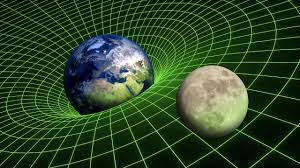

질량으로부터 거리만큼 떨어진 질량에 의한 인력으로 인하여 나타나는 가속도는 두 물체 사이에 작용하는 힘을 제곱미터로 나누어 주면 되고, 이때 m을 지구의 질량 , r을 지구의 반경으로 바꾸면 가속도는 지구의 인력에 의한 중력이 된다.
여기서 G는 중력상수다. 아이작 뉴턴은 《프린키피아》에 이와 같은 중력 이론을 소개했다. 이는 천체의 물리학 운동과 지표면의 낙하 운동을 통합한, 통일 이론이다. 이는 케플러의 제3법칙을 설명할 수 있는 이론이다.